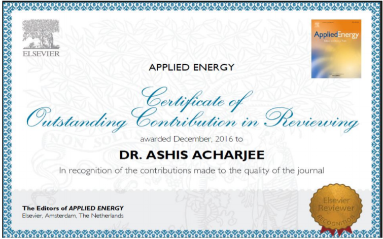
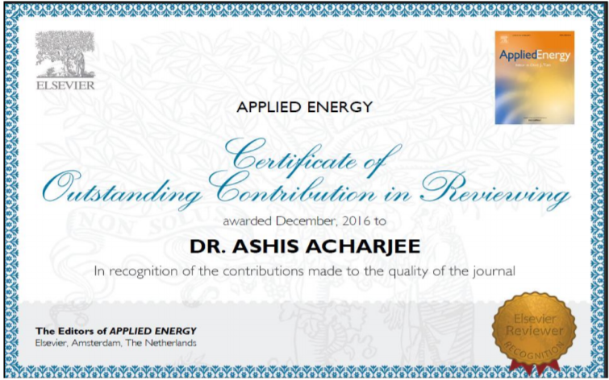

Selected publications and presentations
Paper(s) Published in Peer Reviewed Referred International Journals:
- Acharjee Mr. Ashis and Chakraborti Dr. Prasun (2012), “Study and modeling of Organic
Rankine Cycle Considering District Heating System”, published at the journal of sustainable
Manufacturing & Renewable Energy, Nova Publisher, USA, (impact factor –
4.53),v.1(3/4),pp.139-159.
Preprint
- Acharjee Mr. Ashis and Chakraborti Dr. Prasun (2013),““Diffusion of Technological
Development and its transfer on District Heating in a Social Environment: a Multi Agent
Based Model”," published at international journal of electrical electronic embedded system ,
Research Science press, January – June, v.5(1), pp. 1-8.
- Acharjee Mr. Ashis and Chakraborti Dr. Prasun (2013) “Effects of environmental
assessment on district heating production system-A case study”, published at international
journal of material science and Engineering Research, International Science Press,
December , v.4(2), pp.77-86.
- Acharjee Mr. Ashis and Chakraborti Dr. Prasun (2013), “Socio-Economical Upliftment
Of Rural Tripura With Geothermal Energy Resources: A Case Study With MCDA Software
Application”, published at journal of sustainable Manufacturing & Renewable Energy, Nova
Publisher, USA, (impact factor – 4.53), v.2(3/4), pp.149-158.
- Acharjee Mr. Ashis and Chakraborti Dr. Prasun (2013), “Perspectives of District Heating
Biomass energy technology transfer and its social factors – a Strategies for large-scale
diffusion in India”, published at International Journal of Mechanical Engineering, Serial
publishers, v.5(2), pp. 89-100.
Preprint
- Acharjee Mr. Ashis and Chakraborti Dr. Prasun (2013), “Perspectives and Problems of
International Technology Transfer for Improvements of District Heating System in India”, published at International Journal of Mechanical Engineering and Materials Science , Serial
publishers, v.6(2) (2013), pp. 101-105.
Preprint
Paper(s) Accepted in Peer Reviewed Referred International Journals:
- Acharjee Mr. Ashis and Chakraborti Dr. Prasun (2014), “Study of Social Impacts,
Technology Transfer and related social factors on District Heating System in context of
typical rural set up at Tripura, India”, Accepted at World Research Journal of Sustainable
Development, Bio-info publications [Accepted date: 12.02.2014, Reference no: WRJSD18082013-1]
- Acharjee Mr. Ashis and Chakraborti Dr. Prasun (2014), “Energy analysis of a coal based
thermal power plant- an approach of multiple regression analysis for maximum thermal
efficiency”, Accepted at International Journal of Advance Research (IJOAR.org) of IJOAR
JOURNALS [Accepted date:12.06.2014, Reference No: IJOARME-2052]
Paper(s) Published in Peer Reviewed National Conference/ Proceedings:
- Acharjee Mr. Ashis and Chakraborti Dr. Prasun (2011), “A discrete continuous choice
model of climate change impacts on Energy”, Published at Tripura Science Congress in Energy
for Development Sector, Tripura Science Congress, dated 8th and 9th september.
- Acharjee Mr. Ashis and Chakraborti Dr. Prasun (2012), “Design of experiment,
optimization and stochastic analysis based on Moving Least Square Method to create a logical
model – A case study of Altair Hyper study”, published at Hyperworks Technology Conference
-2012 conference held in Bangalore on 17th and 18th July, v.1, pp.1-14.
Slideshare Link
- Acharjee Dr. Ashis and Chakraborti Dr. Prasun (2016), " Thermodynamic and economical
analysis for the feasibility study of a binary geothermal power plant in India", Abstact
procedings, EPAM-2016, National Conference NIT Agartala, Co-Author-, Nabarun Biswas,
Abhijeet Kumar, Narath Moni Reang.
- Acharjee Dr. Ashis and Chakraborti Dr. Prasun (2016), " Study of social change and
socio-economical assessment in power sector of Tripura perspectives and its socio-economical
measures", Abstact procedings, EPAM-2016, National Conference NIT Agartala, Co-AuthorNabarun Biswas, Abhijeet Kumar, Narath Moni Reang and Syeed Zeeshan Ali Ahemed.
Paper(s) communicated in Peer Reviewed Referred International Journals:
- Acharjee Mr. Ashis and Chakraborti Dr. Prasun (2014), “Environmental assessment of
energy recovery technologies for the treatment and disposal of Municipal solid waste using
Life Cycle Assessment (LCA): A case study of India”, Communicated with Energy journal,
Elsevier (SCI).
- Acharjee Mr. Ashis and Chakraborti Dr. Prasun (2014), “Environmental impact
assessment by LCA (Life Cycle Assessment) method for air-conditioning systems of district
heating power plant - A simplified case study”, Communicated with Renewable and
Sustainable Energy journal, Elsevier (SCI).
- Acharjee Mr. Ashis and Chakraborti Dr. Prasun (2014), “Social life cycle assessment of
solid waste management in Agartala City, Tripura-An Integrated approach with case study”, Communicated with Applied Energy journal, Elsevier (SCI).
- Acharjee Mr. Ashis and Chakraborti Dr. Prasun (2014), “Energy Audit Of 250 MW
Thermal Power, Combined Cycle And Cogeneration Plant –A Case Study From Tripura
Perspectives”, Communicated with Applied Energy journal, Elsevier (SCI).
Paper(s) Published / Accepted / communicated in Peer Reviewed International Conference/
Proceedings:
- Dr. Ashis Acharjee and Prof (Dr). S.C. Saha (2019), “Mathematical model for analysis
of heat transfer in friction stir welding”, Published in International Conference on
Emergent Research in Mathematics and Engineering (ICERME-2019), Deptt.of
Mathematics, NIT Agartala, Co-Author: aBalamurali. N (15UME046), a
Satyam Kumar
(15UME139), Abhishek Das (15UME050)
- Dr. Ashis Acharjee and Dr.Prasun Chakraborti (2019), “Sustainable energy development
under various uncertainty & irreversibility options for efficient electricity planning of India”,
, Abstract accepted (GTINDIA 2019-2566) in Proceedings of the ASME 2019 Gas Turbine
India, GTIndia2019, December 5-6, 2019, IIT Madras, Chennai Tamil Nadu, India
- Dr. Ashis Acharjee and Dr.Prasun Chakraborti (2019), “Study of isothermal heat addition
in an experimental gas turbine”, Abstract accepted (GTINDIA 2019-2568) in Proceedings of
the ASME 2019 Gas Turbine India, GTIndia2019, December 5-6, 2019, IIT Madras,
Chennai Tamil Nadu, India
- Dr. Ashis Acharjee and Dr.Prasun Chakraborti (2018), “Energy audit and subsequent
identification of best alternative for thermal power plant using promethee MCDA approach”, Published in ASME 2018, POWER & ENERGY Conference & Exhibition, USA, June 24-
28, 2018.
- Dr. Ashis Acharjee and Dr.Prasun Chakraborti (2018), “Environmental and economic
impacts evaluation of a gas thermal power plant using life cycle assessment approach”, Abstract
communicated (GTINDIA2017-4944) in Proceedings of the ASME 2017 Gas Turbine India,
GTIndia 2017, December 5-6, 2019, Bangalore, India
Ph. D. / M. TECH/ B.TECH /AMIE GUIDANCE:

WORKSHOP/SHORT TERM COURSE/SDP ORGANIZED/ATTENDED/PAPER PRESENTED:
Conferences/Seminar/Symposium/Workshop Attended- 16 nos (approx.)
Conferences/Seminar/Symposium/Workshop Paper Presented- 06 nos (approx.)
SUBJECTS TAUGHT:
AMIE Level: Fundamentals of Design and Manufacturing, Material Science and Engineering
and Workshop Technology
UG Level: Engineering Mechanics, Engineering Graphics, Engineering Materials,
Instrumentation and Measurement (Both theory and Lab), Applied thermodynamics,
CFD(Elective- V).
PG Level: Alternative fuels and Energy System, Analysis and synthesis of Mechanism, Finite
Element Method, Applied computational Method, Advanced vehicle dynamics, CFD-II, LABIV/CFD Lab
LABORATORY OR WORKSHOP DEVELOPED:
Mechanical Lab, Physics and Chemistry Lab, Electrical Lab and Workshop (ICFAI University,
Tripura)
LABORATORY HANDLED:
Workshop and Mechanical Lab (ICFAI University, Tripura), Metal Trade (VRC for
Handicapped, Govt. Of India, DGE&T)
MEMBERSHIP OF PROFESSIONAL BODIES/SOCIETIES:
Members of Institution of Engineers (India)- AMIE (AM-1322640)
REVIEWER DETAILS:
 

ACHIEVEMENT IN LIFE: